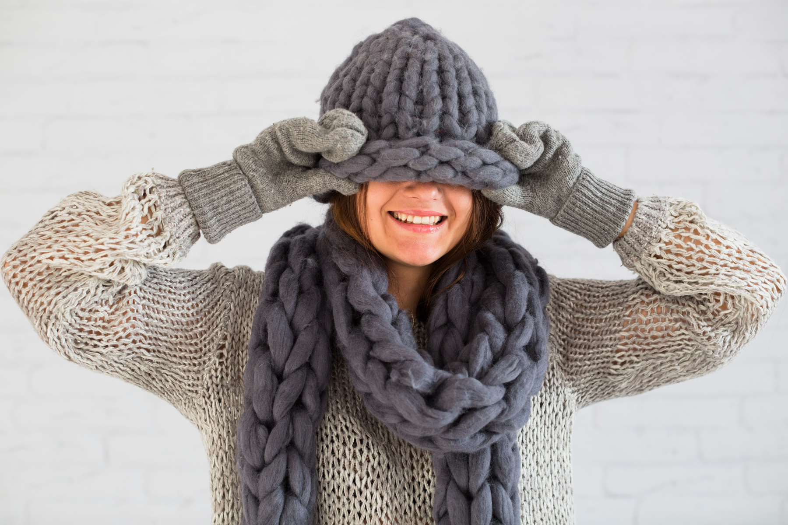
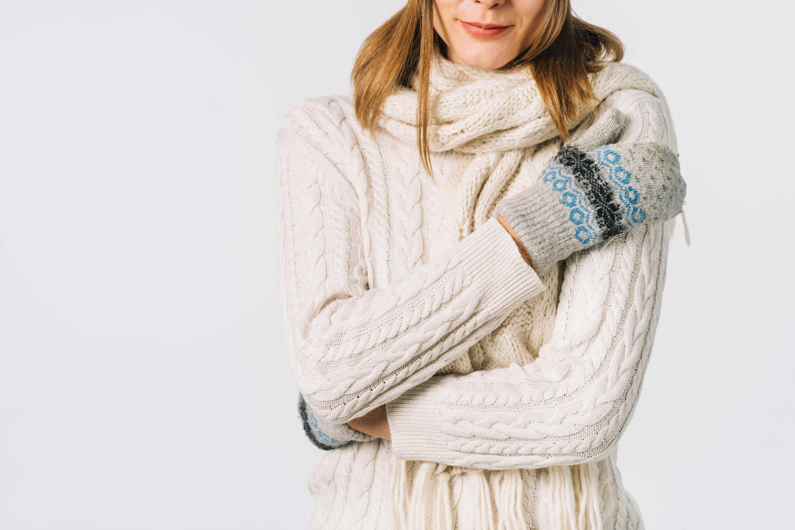

Abrigos
Descubre la calidez y la elegancia de nuestros abrigos de lana, diseñados para combinar confort y estilo en cada temporada. Con tejidos suaves y resistentes, estos abrigos ofrecen una protección ideal contra el frío mientras realzan tu look con un toque sofisticado. Disponibles en una variedad de colores y cortes, son la opción perfecta para quienes buscan calidad y distinción.

Gorros de lana
Protege tu cabeza del frío con nuestros gorros de lana, diseñados para brindar máxima comodidad y estilo. Confeccionados con materiales suaves y resistentes, estos gorros ofrecen abrigo sin perder el toque moderno que complementa cualquier outfit de invierno. Disponibles en distintos colores y modelos, son el accesorio perfecto para enfrentar las bajas temperaturas con elegancia.

Bufandas
Cada bufanda cuenta una historia. Nos dedicamos a crear bufandas de lana tejidas a mano con amor, dedicación y un profundo respeto por lo artesanal. Utilizamos lanas de alta calidad y técnicas tradicionales para ofrecer piezas únicas, cálidas y duraderas, ideales para quienes valoran lo auténtico y lo hecho con el corazón.